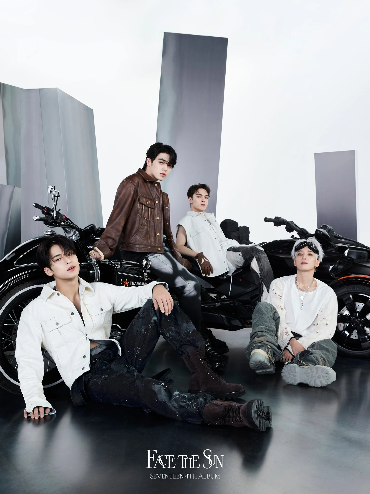
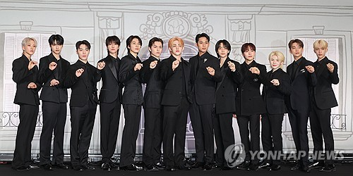

SEVENTEEN 介紹
Vocal Team

Vocal Team 以主唱為核心，包括以下成員：
Woozi（李知勳）： Vocal Team 隊長，身兼作曲與編曲，是 SEVENTEEN 音樂的靈魂人物。
Jeonghan（尹淨漢）： 以柔美的嗓音與氣質外型著稱，個性溫柔又不失幽默。
Joshua（洪知秀）： 韓裔美國人，英文流利，聲音溫暖且細膩，是穩定的和聲支柱。
DK（李碩珉）： 主唱之一，擁有極具穿透力的高音與舞台張力，是團隊開心果。
Seungkwan（夫勝寬）： 兼具歌唱與綜藝能力，以強大聲線與爆笑反應聞名，是人氣王之一。
Hip-hop Team

Hip-hop Team 以 Rap 和嘻哈風格為主，成員如下：
S.Coups（崔勝澈）： SEVENTEEN 隊長，以穩重和領導能力著稱，Rap 實力堅強，團隊的核心支柱。
Wonwoo（全圓佑）： 聲音低沉有磁性，舞台氣場冷靜自信，個性內斂，喜愛閱讀與攝影。
Mingyu（金珉奎）： 多才多藝、形象陽光，兼具 Rap、視覺與綜藝能力，深受粉絲喜愛。
Vernon（崔瀚率）： 韓美混血，出生於紐約，Rap 節奏強烈且風格鮮明，Kenzo 全球代言人。
完整體

SEVENTEEN 是由 13 位成員組成的男子音樂團體，分為三個小分隊：Vocal、Hip-hop、Performance，團名意指「13人 + 3隊 + 1個團體 = 17」。
團員包括：S.Coups、Woozi、Jeonghan、Joshua、Jun、Hoshi、Wonwoo、DK、Mingyu、The8、Seungkwan、Vernon、Dino。
他們以「刀群舞」精準編舞、參與音樂製作而著稱。
粉絲名稱：「CARAT（克拉）」象徵 SEVENTEEN 因粉絲而閃耀。
榮譽紀錄：
- 2023 MAMA Awards：「FML」獲得「年度專輯大獎（Album of the Year）」
- 2024 MAMA Awards：「SEVENTEENTH HEAVEN」再奪年度專輯、「年度藝人（Artist of the Year）」
SEVENTEEN 不僅是舞台上的明星，更是一群彼此信任、齊心努力的夥伴。他們用真誠與才華感動全球粉絲。